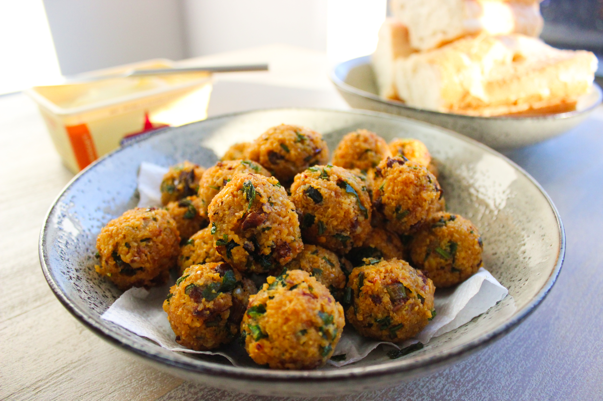

Gâteaux aux piments

Description
Les gâteaux aux piments sont des beignets salés et épicés à base de pois cassés jaunes, d’oignon, d’herbes, et de piment. On les déguste tièdes en apéritif ou collation.
Ingredients
- 2 piments secs (ou 1 piment frais moyen)
- 320 g de pois cassés jaunes
- 1 petit oignon
- 2 échalotes
- 1 c. à soupe de cumin en poudre
- 1 c. à soupe d'huile d'olive extra-vierge
- 10 brins de coriandre fraîche
- 1 pincée de sel, 1 pincée de poivre
- Huile d’arachide (pour la friture)
Steps
- Trempage : La veille, faites tremper les pois cassés dans de l’eau froide à température ambiante :contentReference[oaicite:1]{index=1}.
- Égouttage : Le lendemain, égouttez-les puis laissez-les reposer 10 minutes en passoire :contentReference[oaicite:2]{index=2}.
- Mixage des pois : Mixez les pois pour obtenir une purée et mettez-la dans un grand saladier :contentReference[oaicite:3]{index=3}.
- Mixage des aromates : Dans le mixeur, ajoutez oignon, échalotes, piment et coriandre, puis mixez le tout :contentReference[oaicite:4]{index=4}.
- Mélange : Incorporez ce mélange à la purée de pois. Ajoutez progressivement l’huile d’olive, salez, poivrez et saupoudrez de cumin. Mélangez bien :contentReference[oaicite:5]{index=5}.
- Façonnage : Formez des boulettes de la taille d’une balle de ping-pong, aplatissez-les et disposez-les sur une assiette :contentReference[oaicite:6]{index=6}.
Cuisson
- Chauffez l’huile d’arachide à environ 180 °C dans une sauteuse.
- Plongez les gâteaux dans l’huile chaude et laissez-les dorer 3–4 minutes de chaque côté, jusqu’à ce qu’ils soient bien dorés :contentReference[oaicite:7]{index=7}.
- Égouttez-les sur du papier absorbant et laissez tiédir quelques minutes :contentReference[oaicite:8]{index=8}.
Service suggéré
Servez tiède, seul ou avec un chutney. On les déguste souvent dans les marchés mauriciens (ex. Quatre Bornes) :contentReference[oaicite:9]{index=9}.
Home